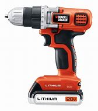

Taladro Percutor Inalámbrico 20V Bosch
Taladro percutor inalámbrico con batería de litio de 20V, 2 velocidades, 13mm de capacidad de portabroca, incluye maletín, cargador y 2 baterías.
Descripción del Producto
El taladro percutor inalámbrico Bosch de 20V es una herramienta profesional diseñada para ofrecer un rendimiento excepcional en todo tipo de trabajos de perforación y atornillado. Con su potente motor sin escobillas, proporciona más potencia y mayor duración de la batería.
Características principales:
- Motor sin escobillas para mayor eficiencia y durabilidad
- 2 velocidades variables para mayor control
- 20 posiciones de par + taladro + percutor
- Luz LED para trabajar en áreas con poca iluminación
- Batería de litio de 20V con indicador de carga
- Mango ergonómico con revestimiento antideslizante
Especificaciones Técnicas
| Marca | Bosch |
|---|---|
| Modelo | GSB 20-2 LI |
| Tipo | Taladro Percutor Inalámbrico |
| Voltaje | 20V |
| Capacidad del portabrocas | 13mm |
| Velocidad sin carga | 0-450/0-1700 RPM |
| Máx. par de apriete | 60 Nm |
| Máx. capacidad de perforación (madera) | 40mm |
| Máx. capacidad de perforación (metal) | 13mm |
| Máx. capacidad de perforación (mampostería) | 13mm |
| Peso | 1.5 kg |
| Incluye | 2 baterías, cargador, maletín, set de puntas |
Opiniones de Clientes
Excelente calidad y duración de batería
He estado usando este taladro durante 3 meses para trabajos profesionales y estoy muy impresionado con su rendimiento. La batería dura todo el día de trabajo y tiene suficiente potencia para todas las tareas que necesito.
Muy bueno pero un poco pesado
El taladro funciona perfectamente y tiene mucha potencia. Mi única queja es que después de usarlo por un tiempo prolongado se siente un poco pesado. Por lo demás, es un producto de excelente calidad.